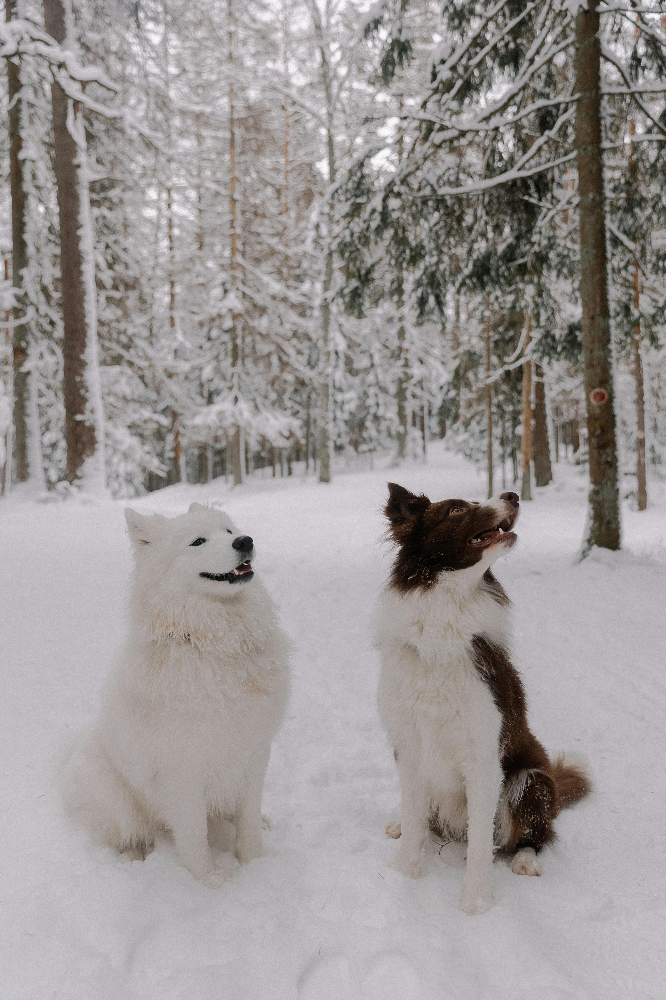

The dog is one of the most loyal and loving animals that exist. It offers not only companionship, but also unconditional love, without asking for anything in return. With its presence, it can fill a home with joy, safety and warmth.A dog understands our emotions, stands by us in difficuly moments, and remind us every day of the true meaning of friendships.
Dogs, also kmown as canies or pets, are among the most beloved compansion animals. They are often called humanity's loyal friends, while in more formal language they are described as domestic animals or companion animals. From playful puppies to fully grown dogs they are known for their loyalty, inteligence, and the strong bond they form with humans.